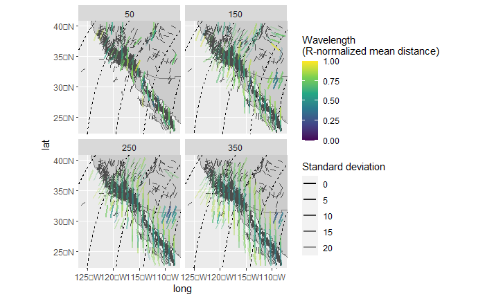
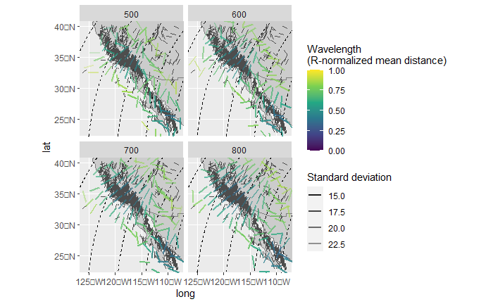

This vignette teaches you how to retrieve the mean direction of stress datasets.
Mean direction
Directional data is pi-periodical. Thus, for the calculation of mean,
the average of 35 and 355\(^{\circ}\)
should be 15 instead of 195\(^{\circ}\). tectonicr
provides the circular mean (circular_mean()) and the
quasi-median on the circle (circular_median()) as metrics
to describe average direction:
data("san_andreas")
circular_mean(san_andreas$azi)
#> [1] 10.66086
circular_median(san_andreas$azi)
#> [1] 9Quality weighted mean direction
Because the stress data is heteroscedastic, the data with less precise direction should have less impact on the final mean direction The weighted mean or median uses the reported uncertainties of the measurements and weights the final average value by the inverse of the uncertainties:
circular_mean(san_andreas$azi, 1 / san_andreas$unc)
#> [1] 9.971235
circular_median(san_andreas$azi, 1 / san_andreas$unc)
#> [1] 9The spread of directional data can be expressed by the standard deviation (for the mean) or the interquartile range (for the median):
circular_sd(san_andreas$azi, 1 / san_andreas$unc) # standard deviation
#> [1] 38.43917
circular_IQR(san_andreas$azi, 1 / san_andreas$unc) # interquartile range
#> [1] 30Statistics in the Euler pole reference frame
The same statistics can also be applied for stress data that has been transferred into the Euler pole reference frame:
data("nuvel1")
euler <- subset(nuvel1, nuvel1$plate.rot == "na")
san_andreas.por <- PoR_shmax(san_andreas, euler, type = "right")
circular_mean(san_andreas.por$azi, 1 / san_andreas$unc)
#> [1] 138.8937
circular_sd(san_andreas.por$azi, 1 / san_andreas$unc)
#> [1] 37.12227
circular_median(san_andreas.por$azi, 1 / san_andreas$unc)
#> [1] 137.0094
circular_IQR(san_andreas.por$azi, 1 / san_andreas$unc)
#> [1] 25.32193Interpolation
Spatial interpolation of stress data is based on the aforementioned metrics (the algorithm is a modified version of the MATLAB script ‘stress2grid’ by Ziegler and Heidbach (2017).
mean_SH <- stress2grid(san_andreas, gridsize = 1, R_range = seq(50, 350, 100))The defaults use quality and inverse distance weighting of the mean, as well as a 25% cut-off for the standard deviation.
The data can now be visualized:
trajectories <- eulerpole_loxodromes(x = euler, n = 40, cw = FALSE)
ggplot(mean_SH) +
borders(fill = "grey80") +
geom_sf(data = trajectories, lty = 2) +
geom_spoke(data = san_andreas, aes(lon, lat, angle = deg2rad(90 - azi)), radius = .5, color = "grey30", position = "center_spoke") +
geom_spoke(aes(lon, lat, angle = deg2rad(90 - azi), alpha = sd, color = mdr), radius = 1, position = "center_spoke", size = 1) +
coord_sf(xlim = range(san_andreas$lon), ylim = range(san_andreas$lat)) +
scale_alpha(name = "Standard deviation", range = c(1, .25)) +
scale_color_continuous(
type = "viridis",
limits = c(0, 1),
name = "Wavelength\n(R-normalized mean distance)",
breaks = seq(0, 1, .25)
) +
facet_wrap(~R)
The interpolated direction of far apart data points will suffer from distortions due to the underlying projection. In order to prevent such effects, the interpolation can be done in the PoR reference frame where the direction stays constant no matter the distance between the data points. Assuming that the stress field is sourced by the plate boundary force, the model-based interpolation allows more reliable results for areas close to plate boundaries.
mean_SH_PoR <- PoR_stress2grid(san_andreas, euler = euler, gridsize = 1, R_range = seq(50, 350, 100))
ggplot(mean_SH_PoR) +
borders(fill = "grey80") +
geom_sf(data = trajectories, lty = 2) +
geom_spoke(data = san_andreas, aes(lon, lat, angle = deg2rad(90 - azi)), radius = .5, color = "grey30", position = "center_spoke") +
geom_spoke(aes(lon, lat, angle = deg2rad(90 - azi), alpha = sd, color = mdr), radius = 1, position = "center_spoke", size = 1) +
coord_sf(xlim = range(san_andreas$lon), ylim = range(san_andreas$lat)) +
scale_alpha(name = "Standard deviation", range = c(1, .25)) +
scale_color_continuous(
type = "viridis",
limits = c(0, 1),
name = "Wavelength\n(R-normalized mean distance)",
breaks = seq(0, 1, .25)
) +
facet_wrap(~R)
Rose diagram
tectonicr offers a rose diagram, i.e. histogram for angular data.
rose(san_andreas$azi, weights = 1 / san_andreas$unc, col = "grey", main = "North pole")
rose(san_andreas.por$azi, weights = 1 / san_andreas$unc, col = "grey", main = "Euler pole")
References
Ziegler, Moritz O., and Oliver Heidbach. 2017. “Manual of the Matlab Script Stress2Grid.” GFZ German Research Centre for Geosciences; World Stress Map Technical Report 17-02. https://doi.org/10.5880/wsm.2017.002.